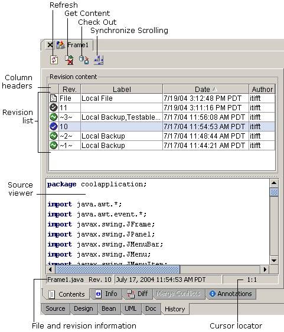

Team development (version control) features vary by JBuilder edition
JBuilder provides features that make team development faster, smoother, and easier. It also provides revision support in every edition. To see version information for a file, click on the History tab at the bottom of the content pane. The tabs provide different views of revision information, depending on your JBuilder edition.

JBuilder integrates with several popular version control systems, including Borland StarTeam, Concurrent Versions System (CVS), Subversion, Microsoft Visual SourceSafe, and Rational ClearCase. Requirements management is provided with the CaliberRM plug-in.
For more information, see:
Building Applications with JBuilder: Comparing files and versions
Managing Application Development: Introduction